Intersection Manual
Toolbar / Icon:

Menu: Snap - Intersection Manual
Shortcut: S, Y
Commands: snapintersectionmanual | sy
Description:
Sometimes the intersection snap mode cannot be used to snap to an
intersection point because the intersection point lays outside one or both of
the entities. This snap tool lets you explicitly specify two intersecting
entities and snap to their intersection point.
Procedure:
- After activating this snap tool, click the first of the two
intersecting entities.
- Click the second of the two intersecting entities. If two intersection
points are possible, make sure to click the second entity somewhere closer
to the intersection point you want to snap to.